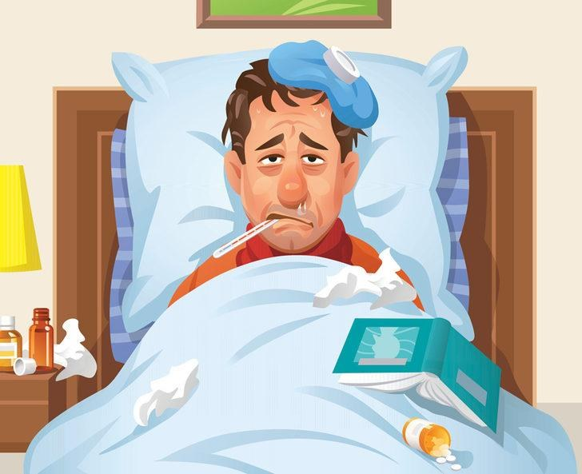
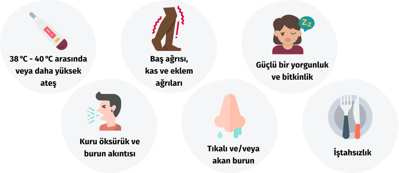

Grip Nedir?
Grip, virüslerin neden olduğu bir solunum yolu enfeksiyonudur. Tıp literatüründeki influenza virüsü enfeksiyonu halk dilinde grip olarak adlandırılmıştır. Grip alt ve üst solunum yollarını tutabilen bir hastalıktır.
Grip ilaçlarla, bitkisel çaylarla veya besin takviyeleri ile kısa sürede geçebileceği gibi risk faktörleri bulunan kimi hastalarda oluşabilecek ileri komplikasyonlarıyla tedavi edilmezse ölümle sonuçlanacak kadar ilerleyebilmektedir.
Kimler Risk Altında?
Birçok kişi gribe yakalandığında risk altındadır. Ancak bazı kişilerin riski daha yüksektir:
- 65 yaş üstü kişiler
- Astım, diyabet ya da kalp hastalığı gibi kronik hastalıkları olan kişiler
- Hamile kadınlar ve iki yaşa kadar olan çocuklar
- Bağışıklık sistemi baskılanmış olanlar
- 6 ay-18 yaş arasında olup, uzun süreli aspirin kullanımı olanlar,
- Toplu alanlarda çalışanlar, yaşayanlar
Grip virüsü hemen hemen her kış mevsiminde salgınlara neden olabilmektedir. Grip virüsünün yapısı her yıl değişmektedir. Bu da insanların her yıl yeni virüs türlerine maruz kalmasına neden olmaktadır.
Grip, hafif solunum yolu hastalıklarına yol açabileceği gibi aynı zamanda ciddi enfeksiyonlara da sebep olabilmektedir.
Grip Nedenleri
Grip bulaşıcı bir hastalıktır. Hasta kişilere temas ve solunum yollarından bulaşabilir. Grip olan bir kişi öksürdüğü, hapşırdığı veya konuştuğu zaman grip virüslerini ortama salar ve bu havayı teneffüs eden sağlıklı kişiler grip virüsünü alabilir.
Grip Belirtileri Nelerdir?
Grip genellikle burun akıntısıyla birlikte başlasa da aşağıdaki belirtilerle de sıkça karşılaşılmaktadır;
- Yüksek ateş
- Boğaz ağrısı
- Halsizlik
- Kas ağrısı
- Baş ağrısı
- Kuru öksürük
- Yorgunluk
- Burun tıkanıklığı vb.
Grip, gençler ve sağlıklı kişiler tarafından hafifçe atlatılabileceği gibi uzun süre devam eden grip tedavi edilmezse zatürre, bronşit, sinüzit gibi hastalıklara yol açabilmektedir. Risk grubunda yer alan kişilerde bu hastalıkların tabloları daha da ağır seyretmektedir. Risk altındaki hasta gruplarında, zatürre ciddi bir komplikasyondur.
Grip Tedavi Yöntemleri Nelerdir?
Grip virüsü şiddetine göre farklı tedavi seçenekleri ile tedavi edilebilir. Bu tedavilerin başında genelde bağışıklık sisteminin kuvvetli tutulması hedeflenmektedir.
Grip tedavisi için genellikle burun spreyi, nefes açıcı spreyler, vitamin takviyeleri veya hekiminizin uygun görmesi halinde antiviral (virüslere karşı) ilaç tedavisi önerilebilir.
Belirtileriniz ağırlaşırsa; nefes darlığı, göğüs ağrısı, yüksek ateş, öksürük vb. belirtilerin ortaya çıkması halinde bir hekime başvurunuz ve tavsiyelerine göre gerekli ilaçları kullanınız.
Bunların yanında mevsimsel geçiş döneminde grip aşısı yaptırarak, o sene salgınlara neden olması muhtemel virüs tiplerinden korunabilirsiniz.
Grip virüsü her yaşta her insanın karşı karşıya kalabileceği bir enfeksiyon türüdür. Ancak grip virüsünden korunmak için bazı tedbirler alabilirsiniz.
Bunlar;
- Sabun ve suyla eller sık sık yıkamalı.
- Aksırma ve öksürme esnasında burun ve ağzınızı kâğıt mendille kapatılmalı ve kullanılan kâğıt mendil çöp kutusuna atılmalı.
- Hasta kişi sayısının arttığı dönemlerde kalabalık ve kapalı ortamlardan uzak durulmalı.
- Bulaşma yollarından olan ağız, burun ve gözlere kirli ellerle temas etmekten kaçınılmalı,
- Temas ettiğiniz yüzeyleri sık sık temizlemelisiniz.
Son olarak Covid 19 benzeri semptomlar tanımlayan hastalarda artışın olduğunu ve Grip ile Covid 19’un karıştırılabildiği bu dönemde kesinlikle kendi kendinize teşhis koyma gibi bir yanılgıya düşmemenizi önemle hatırlatır, şikayetlerinizin olması durumunda kesin tanı konmadan tedaviye başlamamanızı şiddetle öneririz.
SM. Mustafa Ali KORKMAZ